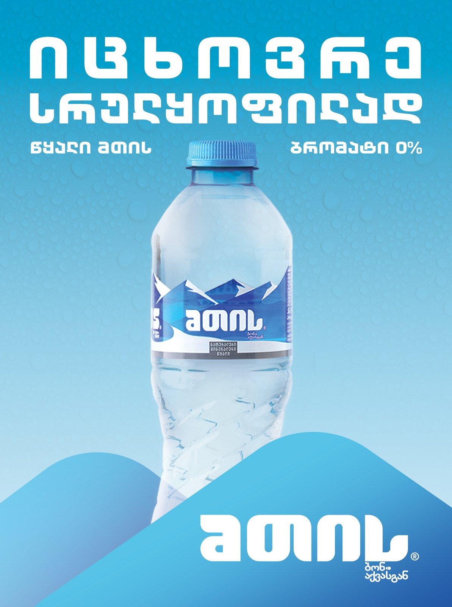
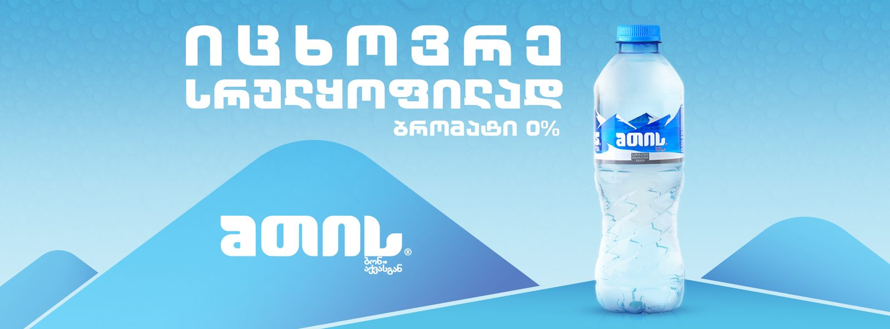
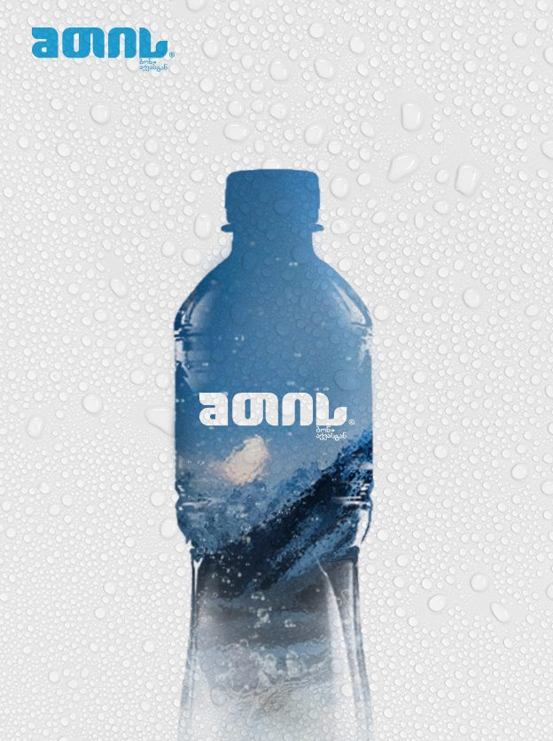

MTIS × Paris Saint-Germain
A sponsorship shot in Paris, run in Georgia
MTIS is a Georgian mountain water and a Paris Saint-Germain sponsor. The Parc des Princes shoot with the club's players supplied the footage, and I built MTIS's own campaign from it.
Press, cover and banner artwork



Film and motion
- Role
- Created: the press and cover artwork, the banner material, and the Georgian-language cutdowns edited from the Paris shoot.
- Scale
- A Paris Saint-Germain sponsorship carried in Georgia for three years. Press and magazine-cover artwork, banner material and Georgian-language cutdowns, up to the stadium's own LED boards during Paris Saint-Germain matches.
- Authorship
- Created for MTIS: the Georgian side of a Paris Saint-Germain sponsorship, built from footage shot at the club's own stadium.
- Years
- 2023–2025
- Credit
- AdsomeFish, in affiliation with dentsu, and Media Solution, Tbilisi. Graphic & Motion Designer: Gedevan Kuprava.